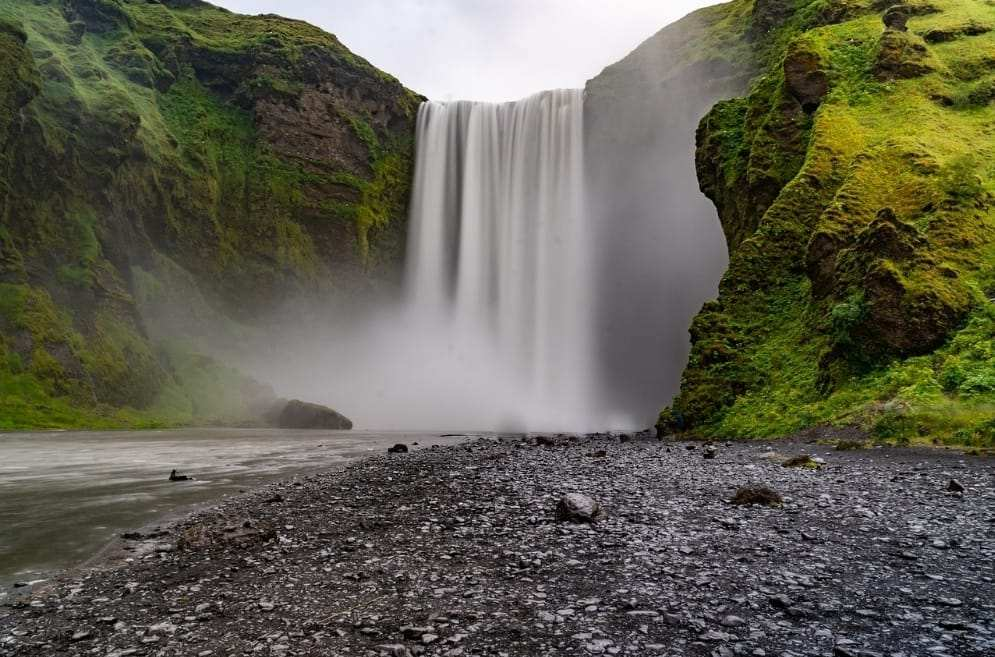

Water rafting is a fun and exciting outdoor activity that involves navigating a river or other body of water in an inflatable raft. Participants work together as a team to paddle the raft through rapids, waves, and other obstacles, making for an adrenaline-pumping adventure. Water rafting is a great way to experience the beauty of nature and get some exercise while having fun. It's a popular activity for people of all ages and skill levels, from beginners to experienced rafters. Whether you're looking for a relaxing float down a calm river or a thrilling ride through challenging rapids, there's a water rafting trip for you. At Water Rafting, we offer a variety of guided rafting trips on rivers throughout the country. Our experienced guides will help you navigate the river safely and provide you with all the equipment you need for a fun and memorable adventure. Whether you're looking for a half-day trip or a multi-day expedition, we have a trip that's perfect for you. So come join us for an unforgettable water rafting experience. Book your trip today and get ready to make some memories that will last a lifetime!


Khailin Water Rafting
History
Water rafting is a fun and exciting outdoor activity that involves navigating a river or other body of water in an inflatable raft. Participants work together as a team to paddle the raft through rapids, waves, and other obstacles, making for an adrenaline-pumping adventure